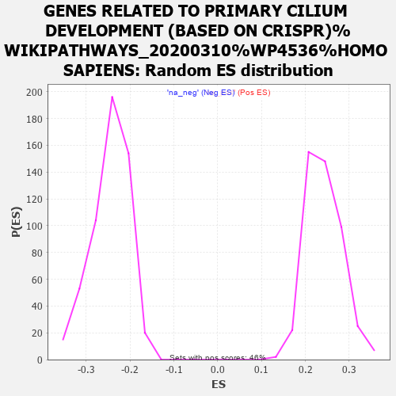

| | | Dataset | ASXL1_gsea_list |
| Phenotype | NoPhenotypeAvailable |
| Upregulated in class | na_neg |
| GeneSet | GENES RELATED TO PRIMARY CILIUM DEVELOPMENT (BASED ON CRISPR)%WIKIPATHWAYS_20200310%WP4536%HOMO SAPIENS |
| Enrichment Score (ES) | -0.5933997 |
| Normalized Enrichment Score (NES) | -2.427185 |
| Nominal p-value | 0.0 |
| FDR q-value | 0.0 |
| FWER p-Value | 0.0 |
Table: GSEA Results Summary
_WIKIPATHWAYS_20200310_WP4536_HOMO_SAPIENS_201.png) Fig 1: Enrichment plot: GENES RELATED TO PRIMARY CILIUM DEVELOPMENT (BASED ON CRISPR)%WIKIPATHWAYS_20200310%WP4536%HOMO SAPIENS
Fig 1: Enrichment plot: GENES RELATED TO PRIMARY CILIUM DEVELOPMENT (BASED ON CRISPR)%WIKIPATHWAYS_20200310%WP4536%HOMO SAPIENS
Profile of the Running ES Score & Positions of GeneSet Members on the Rank Ordered List
| PROBE | GENE SYMBOL | GENE_TITLE | RANK IN GENE LIST | RANK METRIC SCORE | RUNNING ES | CORE ENRICHMENT | | 1 | FOPNL | | | 2154 | 1.987 | -0.1366 | No |
| 2 | B9D1 | | | 2307 | 1.895 | -0.1362 | No |
| 3 | EVC2 | | | 2469 | 1.791 | -0.1370 | No |
| 4 | OFD1 | | | 3363 | 1.326 | -0.1908 | No |
| 5 | FUZ | | | 5328 | 0.520 | -0.3228 | No |
| 6 | DYNLL1 | | | 5340 | 0.516 | -0.3206 | No |
| 7 | WDPCP | | | 5390 | 0.501 | -0.3211 | No |
| 8 | KATNB1 | | | 5461 | 0.475 | -0.3232 | No |
| 9 | BBS9 | | | 5740 | 0.385 | -0.3400 | No |
| 10 | CEP76 | | | 7361 | -0.001 | -0.4513 | No |
| 11 | CEP104 | | | 7711 | -0.069 | -0.4749 | No |
| 12 | WDR34 | | | 8000 | -0.129 | -0.4940 | No |
| 13 | ARL6 | | | 8035 | -0.138 | -0.4955 | No |
| 14 | FBF1 | | | 8395 | -0.223 | -0.5189 | No |
| 15 | MKKS | | | 8421 | -0.229 | -0.5193 | No |
| 16 | TUBE1 | | | 8471 | -0.244 | -0.5213 | No |
| 17 | WDR60 | | | 8498 | -0.251 | -0.5216 | No |
| 18 | IFT20 | | | 8559 | -0.267 | -0.5242 | No |
| 19 | CEP83 | | | 8598 | -0.278 | -0.5252 | No |
| 20 | SASS6 | | | 8786 | -0.331 | -0.5362 | No |
| 21 | TRAPPC11 | | | 9194 | -0.460 | -0.5615 | No |
| 22 | IFT27 | | | 9217 | -0.465 | -0.5604 | No |
| 23 | WDR35 | | | 9457 | -0.549 | -0.5737 | No |
| 24 | CEP44 | | | 9623 | -0.607 | -0.5815 | No |
| 25 | CEP120 | | | 9635 | -0.609 | -0.5788 | No |
| 26 | DYNLT1 | | | 9669 | -0.618 | -0.5775 | No |
| 27 | TULP3 | | | 9708 | -0.633 | -0.5765 | No |
| 28 | MKS1 | | | 9823 | -0.677 | -0.5805 | No |
| 29 | FGFR1OP | | | 9847 | -0.683 | -0.5781 | No |
| 30 | TMEM17 | | | 9853 | -0.686 | -0.5746 | No |
| 31 | WDR19 | | | 10016 | -0.749 | -0.5814 | No |
| 32 | BBS1 | | | 10045 | -0.758 | -0.5790 | No |
| 33 | TMEM216 | | | 10124 | -0.794 | -0.5798 | No |
| 34 | CLUAP1 | | | 10143 | -0.804 | -0.5765 | No |
| 35 | INPP5E | | | 10152 | -0.808 | -0.5724 | No |
| 36 | IFT80 | | | 10175 | -0.816 | -0.5692 | No |
| 37 | KIF3B | | | 10356 | -0.887 | -0.5765 | No |
| 38 | IFT122 | | | 10407 | -0.906 | -0.5748 | No |
| 39 | CBY1 | | | 10414 | -0.910 | -0.5700 | No |
| 40 | BBS7 | | | 10439 | -0.920 | -0.5664 | No |
| 41 | TTC30B | | | 10465 | -0.933 | -0.5627 | No |
| 42 | IFT52 | | | 10828 | -1.091 | -0.5814 | No |
| 43 | TRAF3IP1 | | | 10976 | -1.164 | -0.5848 | No |
| 44 | TUBD1 | | | 11102 | -1.224 | -0.5864 | Yes |
| 45 | BBS12 | | | 11147 | -1.248 | -0.5823 | Yes |
| 46 | DYNC2LI1 | | | 11177 | -1.264 | -0.5770 | Yes |
| 47 | BBS2 | | | 11204 | -1.279 | -0.5715 | Yes |
| 48 | TMEM107 | | | 11433 | -1.389 | -0.5792 | Yes |
| 49 | IFT172 | | | 11466 | -1.409 | -0.5734 | Yes |
| 50 | BBS4 | | | 11634 | -1.490 | -0.5763 | Yes |
| 51 | DYNC2H1 | | | 11706 | -1.526 | -0.5725 | Yes |
| 52 | TTC8 | | | 11742 | -1.548 | -0.5660 | Yes |
| 53 | TCTEX1D2 | | | 11751 | -1.550 | -0.5577 | Yes |
| 54 | TCTN3 | | | 11790 | -1.575 | -0.5513 | Yes |
| 55 | CC2D2A | | | 11803 | -1.583 | -0.5431 | Yes |
| 56 | IFT43 | | | 11884 | -1.626 | -0.5393 | Yes |
| 57 | TXNDC15 | | | 12058 | -1.729 | -0.5413 | Yes |
| 58 | IFT140 | | | 12203 | -1.811 | -0.5408 | Yes |
| 59 | HSPB11 | | | 12260 | -1.847 | -0.5341 | Yes |
| 60 | RAB23 | | | 12285 | -1.859 | -0.5251 | Yes |
| 61 | LZTFL1 | | | 12297 | -1.869 | -0.5152 | Yes |
| 62 | CEP295 | | | 12543 | -2.041 | -0.5203 | Yes |
| 63 | TTC21B | | | 12746 | -2.190 | -0.5217 | Yes |
| 64 | EVC | | | 12770 | -2.207 | -0.5106 | Yes |
| 65 | IFT46 | | | 12840 | -2.263 | -0.5024 | Yes |
| 66 | CEP192 | | | 12845 | -2.269 | -0.4897 | Yes |
| 67 | BBS10 | | | 12872 | -2.289 | -0.4784 | Yes |
| 68 | ARL13B | | | 12930 | -2.328 | -0.4690 | Yes |
| 69 | ICK | | | 12947 | -2.343 | -0.4567 | Yes |
| 70 | KIFAP3 | | | 12990 | -2.378 | -0.4460 | Yes |
| 71 | TMEM67 | | | 13005 | -2.391 | -0.4333 | Yes |
| 72 | CDK20 | | | 13100 | -2.477 | -0.4256 | Yes |
| 73 | MIB1 | | | 13134 | -2.503 | -0.4135 | Yes |
| 74 | CEP162 | | | 13182 | -2.548 | -0.4022 | Yes |
| 75 | RPGRIP1L | | | 13243 | -2.601 | -0.3914 | Yes |
| 76 | RABL2A | | | 13255 | -2.616 | -0.3772 | Yes |
| 77 | PIBF1 | | | 13309 | -2.668 | -0.3656 | Yes |
| 78 | RABL2B | | | 13466 | -2.824 | -0.3602 | Yes |
| 79 | IFT74 | | | 13484 | -2.843 | -0.3451 | Yes |
| 80 | ARMC9 | | | 13514 | -2.870 | -0.3306 | Yes |
| 81 | KIAA0753 | | | 13544 | -2.905 | -0.3160 | Yes |
| 82 | SCLT1 | | | 13568 | -2.934 | -0.3008 | Yes |
| 83 | KIF3A | | | 13626 | -2.997 | -0.2876 | Yes |
| 84 | TTC23 | | | 13710 | -3.100 | -0.2756 | Yes |
| 85 | TTC26 | | | 13717 | -3.118 | -0.2581 | Yes |
| 86 | EFCAB7 | | | 13835 | -3.299 | -0.2473 | Yes |
| 87 | TTBK2 | | | 13969 | -3.517 | -0.2363 | Yes |
| 88 | CEP97 | | | 14053 | -3.681 | -0.2210 | Yes |
| 89 | BBS5 | | | 14070 | -3.707 | -0.2009 | Yes |
| 90 | CEP19 | | | 14103 | -3.745 | -0.1816 | Yes |
| 91 | IFT88 | | | 14140 | -3.803 | -0.1624 | Yes |
| 92 | TCTN2 | | | 14212 | -3.949 | -0.1447 | Yes |
| 93 | C2CD3 | | | 14226 | -3.985 | -0.1228 | Yes |
| 94 | TMEM231 | | | 14273 | -4.100 | -0.1025 | Yes |
| 95 | IQCE | | | 14282 | -4.125 | -0.0794 | Yes |
| 96 | IFT81 | | | 14313 | -4.165 | -0.0577 | Yes |
| 97 | ARL3 | | | 14347 | -4.265 | -0.0355 | Yes |
| 98 | TCTN1 | | | 14398 | -4.425 | -0.0137 | Yes |
| 99 | IFT57 | | | 14578 | -5.449 | 0.0052 | Yes |
Table: GSEA details [plain text format]

Fig 2: GENES RELATED TO PRIMARY CILIUM DEVELOPMENT (BASED ON CRISPR)%WIKIPATHWAYS_20200310%WP4536%HOMO SAPIENS: Random ES distribution
Gene set null distribution of ES for GENES RELATED TO PRIMARY CILIUM DEVELOPMENT (BASED ON CRISPR)%WIKIPATHWAYS_20200310%WP4536%HOMO SAPIENS